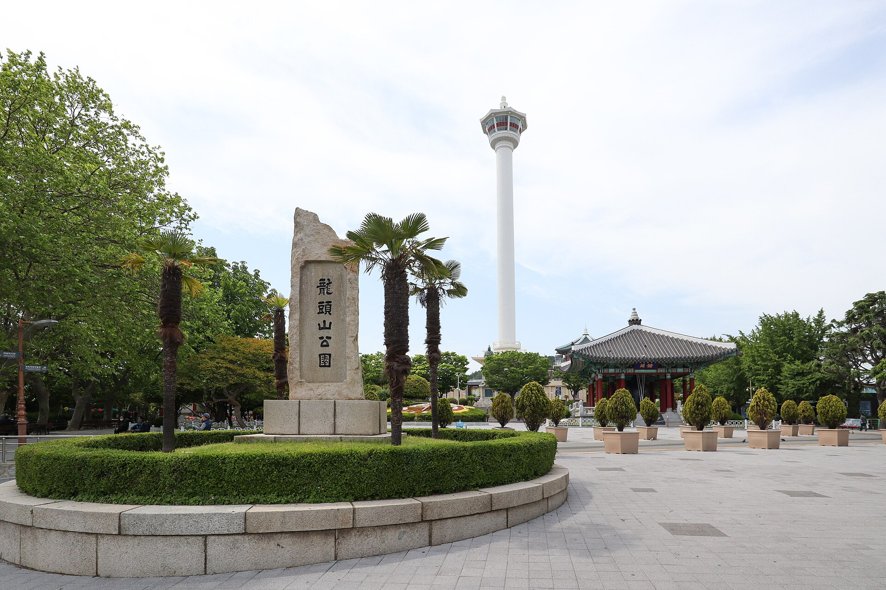

O Parque Yongdusan é um parque localizado no centro de Busan, Coreia do Sul. Ele é conhecido por sua torre de observação, a Torre de Busan, que oferece vistas panorâmicas da cidade e do porto. O parque é um local popular para os moradores locais e turistas, oferecendo áreas de lazer, jardins bem cuidados e espaços para eventos culturais.

| Trecho da Viagem | Meio de Transporte | Distância Aprox. |
|---|---|---|
| Pirapora (MG) ➔ Confins (CNF) | Carro / Ônibus | 350 km |
| Belo Horizonte (CNF) ➔ Guarulhos (GRU) | Avião | 500 km |
| São Paulo (GRU) ➔ Incheon (ICN) | Avião (Conexão) | 18.300 km |
| Incheon (ICN) ➔ Busan (Estação Central) | Trem KTX | 325 km |
| Estação Busan ➔ Parque Yongdusan | Metrô (L1) / Táxi | 2 km |